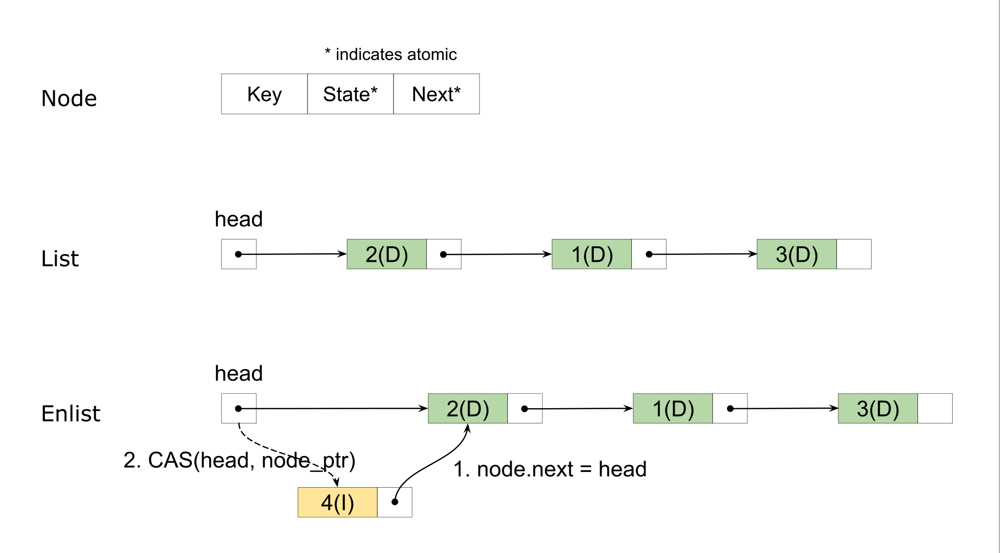
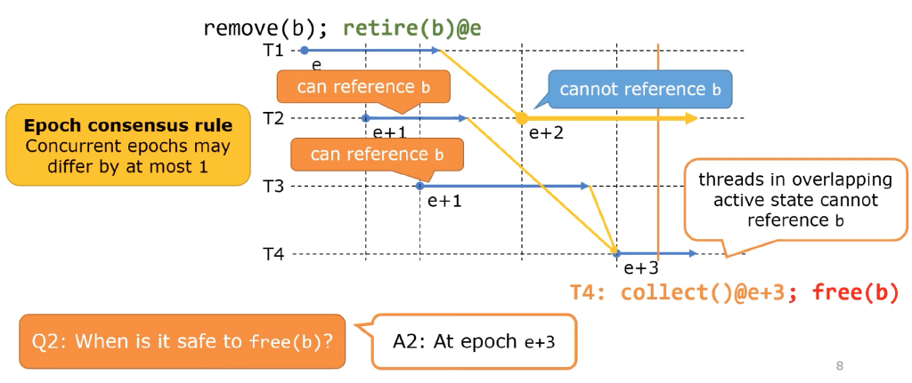
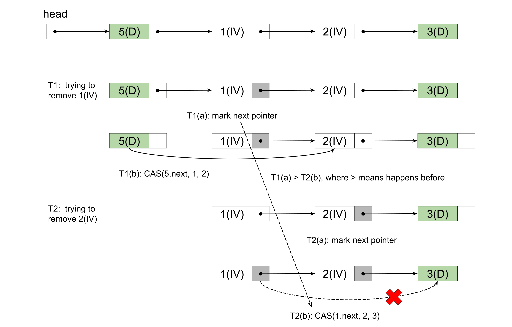

代码杂谈：无锁编程
作者： Ark
原文： 代码杂谈：无锁编程（一）
缘起
俗话说的好，作为一个在数据库团队做 Kubernetes 开发的同学，不能做到编写 B 树至少要做到心里有 B 数。因此最近闲暇时间一直在研究可持久化的 B 树怎么写，接着就了解到了 BwTree（微软 14 年提出的无锁 B 树），然后开始思考其中的 mapping table 怎么实现，然后开始看 FasterKV（微软 18 年提出的可持久化无锁 KV），然后就彻底跑偏了…
本文主要记录我拿 Rust 折腾几个无锁数据结构的经验和教训，这样以后不记得了还能翻一翻，并告诉自己：
没事别瞎折腾什么劳什子无锁编程！
数据结构
通常，无锁数据结构的实现都要求有一些特殊的硬件支持，例如支持原子 CAS 、LL/SC 指令的处理器，或是事务型内存（transactional memory）。目前，主流的处理器都已经支持了 CAS 操作，因此大部分无锁数据结构是基于 CAS 操作设计的。通常来说，CAS 操作只能作用于 32/64 位整数 – 正好放下一个指针，因此各种无锁结构都围绕着指针的原子操作而设计。本文也将主要介绍一种无锁链表在 Rust 中的实现，链表算法主要基于 Zhang et al. 在 2013 年提出的一种无锁无序链表 [1]。
注：也存在支持 multi-word CAS 的 CPU。
无锁链表（Unordered Set)
首先介绍一下上述提到的无锁链表，它其实是一个结构为单向链表的无序集合，包含以下 3 种操作：
insert(k)，插入一个元素k并返回是否成功；remove(k)，删除一个元素k并返回是否成功；contains(k)，判断一个元素k是否在集合（链表）中；
链表的节点和整体结构如下图所示：


其中每个节点除了包含本身的元素以外，还有两个原子变量：
- state，代表了当前节点的状态，论文中状态的定义有 4 种：
- DAT，表示可见的元素（节点）
- INS，表示插入中的元素
- REM，表示删除中的元素
- INV，表示无效的元素（节点）
- next，存储了下一个节点的指针
和通常的单向链表一样，链表有一个 head 指针指向链表头，然后通过节点上 next 中存储的指针串联起来。当需要插入一个新节点的时候，使用 CAS 原子操作将 head 修改为新节点的地址，如图所示。当然 CAS 操作是可能会失败的，此时我们只需要重新进行图中的步骤。Rust 代码大致如下：
#![allow(unused)] fn main() { fn enlist(&self, node_ptr: SharedNodePtr<E>, g: &Guard) { debug_assert!(!node_ptr.is_null()); let node = unsafe { node_ptr.deref() }; let mut head_ptr = self.head.load(Ordering::Acquire, g); loop { // Set node.next to untagged(head). node.next.store(head_ptr.with_tag(0), Ordering::Release); match self.head.compare_exchange( // Keep head's tag. head_ptr, node_ptr.with_tag(head_ptr.tag()), Ordering::AcqRel, Ordering::Acquire, g ) { Ok(_) => return, Err(err) => head_ptr = err.current, } } } }
假如不考虑链表节点的删除，基于无锁链表的无序集合其实很容易实现 – 添加只需要在链表头插入对应元素的节点 (DAT)，删除同样插入一个节点，只不过标记状态为删除 (REM)。集合元素的查找只要顺序遍历链表，直到找到第一个拥有相同元素的节点，那么节点的状态就是元素的存在状态。这种简单的方式显然有一个比较大的问题，那就是链表会越来越长，而集合操作的复杂度和链表长度是正相关的。因此 Zhang et al. 提出的算法引入了 INS 和 INV 两种状态，并包含了节点的删除操作。
在上述 3 种操作中，contains 是一个只读操作，因此实现它只需要按照链表无脑向下寻找就可，直到找到第一个可见的元素。在不考虑 GC 的情况下，只读操作永远都能正常运行。另外两个操作是比较类似的：它们都在链表头插入了一个包含了对应元素的节点，然后从该节点开始往后探查是否操作成功。算法流程大致为：
-
insert 插入状态为 INS 的节点，并向后找到第一个元素相同的节点
-
节点状态为
INS或者DAT则表明链表中已经存在该元素了，表明插入失败； -
节点状态为
REM则表明链表中该元素已经被删除了，表明插入成功； -
节点状态为
INV的忽略； -
未找到，则插入成功；
-
remove 插入状态为 REM 的节点，并向后找到第一个元素相同的节点
-
节点状态为
REM则表明链表中该元素已经被删除了，表明删除失败； -
节点状态为 INS 则表明有另一个线程正在插入该元素，尝试使用 CAS 标记为 REM
- 成功，表明删除成功；
- 失败，则重新读取节点状态重试；
-
节点状态为
INV的忽略； -
节点状态为
DAT则尝试用 CAS 标记为INV，CAS 的成功/失败代表删除的成功/失败；
在插入和删除的向后查找过程中，如果遇到 INV 的无效节点，则会尝试使用 CAS 删除该节点，从而达到缩短链表的目的。
#![allow(unused)] fn main() { CAS(prev.next, cur_ptr, cur.next) }
在基于 CAS 的无锁链表算法中，通常会遇到两个问题：
- ABA 问题：即在一个线程 1 进行原子 CAS 操作前，它看到的是 A，此时另一个线程 2将它修改为 B，然后又修改回 A，然后线程 1 再进行 CAS 操作时将会成功完成操作并可能破坏数据结构；
- 在本文描述的算法中不会出现 ABA 问题，因为其中的任意一个原子变量都不会出现值循环的修改（state 是有顺序的，next 一定是间隔向后修改，而链表中间不会有插入）；
- 并发删除问题：当链表为 A -> B -> C -> D 时，线程 1 和线程 2 并发删除 B 和 C 可能会导致 C 的删除无效化/被取消：
- 无效化：线程 1 删除 B，此时链表为 A -> C -> D，此时链表 2 看到的链表还是 B -> C -> D，它将 B.next 设置为 D 对原链表无影响；
- 被取消：线程 1 读取 B.next 为 C，此时 线程 2 删除 C，链表为 A -> B -> D，然后线程 1 执行 CAS(A.next, B, C) 成功，链表又恢复到了 A -> C -> D；
- 并发删除问题在该算法中是存在的，但是并不影响正确性，因为被删除的节点一定是
INV状态的，而该状态的节点不会影响任何操作；
在 Java 等 GC 语言中，并发删除问题并不是一个大问题。而在无 GC 的语言中，并发删除会让节点 GC 变得更难，这在后续的 GC 小节中会进行分析并提出解决方案。
上述算法三个操作的时间复杂度都是 O(n) 的，因此在集合大的时候性能不是很好。同样，指针本身会带来巨量的 cpu cache miss，因此无锁算法通常单线程性能比普通的非并发算法要差的多。
无锁哈希表
在哈希表中通常使用链表来解决哈希冲突的问题，那当我们拥有一个无锁链表，自然而然的可以构建一个无锁的哈希表，它包含以下几个操作：
put(k, v)，将 k 映射到 vremove(k)，删除 k 上的映射get(k)，获取 k 上映射的值
显然，我们只需要和普通的哈希表一样准备一组 buckets，每一个 bucket 指向一个无锁链表就可以轻松地构建出一个无锁哈希表。这样的无锁建立在无法增加或是减少 buckets 的基础上。在 SIGMOD 2018 上微软发表了关于 FasterKV 的论文[3]中提到，通过结合 epoch 框架提出了一种无锁扩缩容的方式，按照我的理解仍然是一个变相的自旋锁，这里不做详细介绍。
为了进行实验，我也用 Rust 实现了 FasterKV 的内存版本（不带扩缩容的能力），在实现小节中会呈现实验结果。
垃圾回收（GC)
现代的高级编程语言通常都会提供内存 GC 的能力，例如 Java、Go、Python 以及一众基于 JVM 的语言等等。只有一些偏向底层的“倒霉”语言才没有 GC，Rust 是属于新晋的这一类编程语言之一。在 Rust 中，编译器会自动将内存释放的相关代码编织到程序中，这种方式大约是借鉴的 C++ 的 RAII。但是在无锁数据结构中，并发访问会带来一个额外的问题：什么时候对象以及它的内存才是可以安全回收的？
考虑这样一个场景：线程 1 删除了链表中的一个节点，但线程 2 此时还在访问这个节点，这在无锁并发场景下是成立的。此时，这个节点还不能被安全回收，但我们都知道它最终将不可能被访问到。因此无锁情况下的垃圾回收方法主要需要解决的问题是：如何找到一个时刻，此时被删除的对象已经不可能在访问到了。著名的 GC 方法有 QSBR（Quiescent-state-based Reclaimation）、EBR（Epoch-based Reclaimation）和 HPBR（Hazard-pointer-based Reclaimation）等，本文主要介绍和使用其中的 EBR 这一种方法。
Epoch-based Reclaimation
EBR 的主要思路是将操作分代（epoch），在 epoch 不断推进的过程中保证在老 epoch 中删除的对象在新的 epoch 中不可能再被访问到，从而找到一个安全的时刻去回收对象。EBR 的工作方式如下图所示：

通常的 EBR 实现方式中：
- 全局有一个唯一的 epoch，它会不断地增长，并且在增长时加 memory fence 保证之前的所有修改可见；
- 每个线程在操作时进入当前 epoch，在结束时退出当前 epoch，实现上来说就是每个线程维护一个本地的 epoch，在每次操作时进行同步；
- 为了效率考虑，真正实现时可以在数次操作后再同步；
- 在线程从无锁数据结构中删除一个对象时，将这个对象加到 retire 列表中，并标记回收 epoch 为当前的全局 epoch，同时尝试抬高全局 epoch；
- 同样效率起见，实现时可以在数次操作后再抬高全局 epoch；
显然，在 epoch 抬高之后，之前的删除操作都应该对所有线程可见了，那么只要所有的线程都退出了删除发生的 epoch，就一定能安全地回收那些被删除的对象。因此，安全 epoch（在小于等于这个 epoch 的删除的对象可以安全回收）的是所有线程的本地 epoch 中最小的那个减 1。这种策略下全局 epoch 可能会很快地增长上去，因此还有另外一种方式：在抬高全局 epoch 时，检查是否所有线程的本地 epoch 都已经等于全局 epoch 了，如果是才进行抬高。因为在这种情况下全局 epoch 和本地 epoch 最多差不超过 1，因此安全 epoch 可以简单的用全局 epoch 减 2 来计算。在这种策略下也可以将 epoch 简化成只有 3 代，可以安全回收的那一代是 (全局 epoch + 1) % 3。
注：图中虽然也保证了代差不超过 1，但是使用的是本地 epoch 作为 retire 的代，因此安全 epoch 应该是全局 epoch - 3。
EBR 通过分代的方式有效地找出了可安全回收的 grace period，但是也存在一些问题：
- 如果有一些操作比较慢，可能会导致安全 epoch / 全局 epoch（三代）无法推进，从而导致内存始终无法释放；
- 其中进行的删除操作一定要完全发生，不能被取消或是失效使得在后续的操作中还能够访问到；
上文描述的无锁链表在配合 EBR 时就存在第二个问题，因为并发删除会导致节点删除的取消或者失效。这里感谢 @zzy590 指出这个问题，在和他讨论后得出了一个解决办法 – 做指针标记，两阶段删除节点。方法大概原理为：
- 删除前在对应节点的
next指针上做标记：CAS(node.next, unmark(next), mark(next))； - 禁止删除标记过的节点的下一个节点，也就是禁止了相邻的并发删除；
- 删除操作的 CAS 改为
CAS(prev.next, unmark(cur), unmark(next))；
- 删除操作的 CAS 改为
- 所有线程遇到标记过指针的节点都可以尝试进行删除操作；
- 删除操作中遇到禁止删除的情况则跳过节点；
在更改过的算法中，相邻并发删除的一种情况如下图所示：

除了进行对象回收之外，EBR 还可以成为防止其他并发访问问题的框架，例如 FasterKV 中就使用它来推进 Hybrid Log 中 fuzzy region，具有比较强的通用性。
实现
最后，我将文中所描述到的无锁链表、哈希表使用 Rust 进行了实现。EBR 框架使用了 crossbeam-epoch 这个 crate 提供，然后参考内部的结构实现了 FasterKV 中提到的前 16 位作为标记、后 48 位作为地址的原子指针。
代码开放在 github 上：https://github.com/ruaaadb/lock-free 。感兴趣的同学可以下下来玩一下。
注：编译要求本地有 tcmalloc 链接库，tcmalloc 可以适应极高的本地内存分配速率。
我的 Macbook Pro / M1 Pro 上简单做了一下链表的实验，性能如下所示：
| Threads | R=2K, S=1K, L=0% | R=2K, S=1K, L=34% | R=2K, S=1K, L=80% | R=2K, S=1K, L=100% |
|---|---|---|---|---|
| 1 | 637 ops/ms | 649 ops/ms | 660 ops/ms | 671 ops/ms |
| 2 | 1060 ops/ms | 1094 ops/ms | 1196 ops/ms | 1312 ops/ms |
| 4 | 1754 ops/ms | 1914 ops/ms | 2148 ops/ms | 2571 ops/ms |
| 8 | 2907 ops/ms | 3321 ops/ms | 4042 ops/ms | 4941 ops/ms |
注：R 是 key range，S 是链表期望长度，L 是查询比例，测试中写是一半删除一半插入。
可以看到性能并不是特别好，但得益于芯片的进步，即使做了两阶段删除还是能吊打论文的数据。
参考文献
[1] Zhang, Kunlong, et al. “Practical non-blocking unordered lists.” International Symposium on Distributed Computing. Springer, Berlin, Heidelberg, 2013.
[2] Harris, Timothy L. “A pragmatic implementation of non-blocking linked-lists.” International Symposium on Distributed Computing. Springer, Berlin, Heidelberg, 2001.
[3] Chandramouli, Badrish, et al. “Faster: A concurrent key-value store with in-place updates.” Proceedings of the 2018 International Conference on Management of Data. 2018.
[4] https://github.com/crossbeam-rs/crossbeam
[5] https://en.wikipedia.org/wiki/ABA_problem
[6] https://www.youtube.com/watch?v=trsmyznC2I8&ab_channel=ACMSIGPLAN